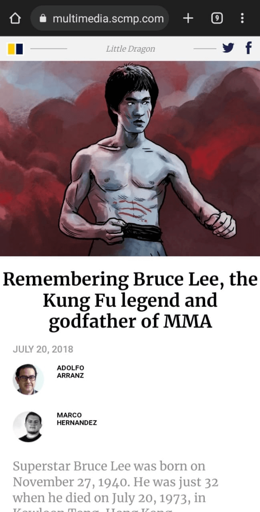
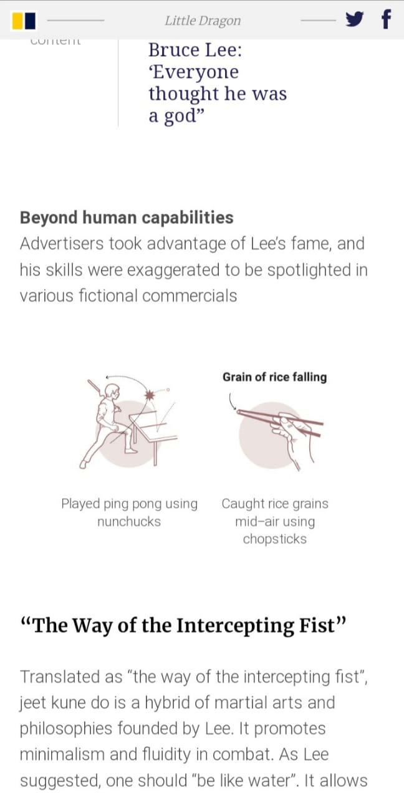
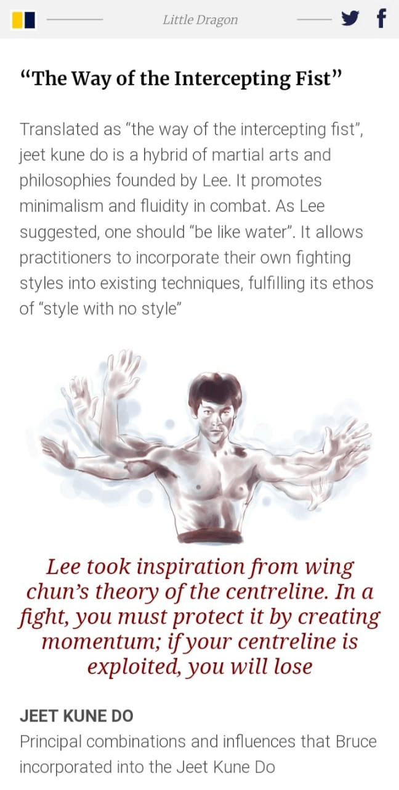
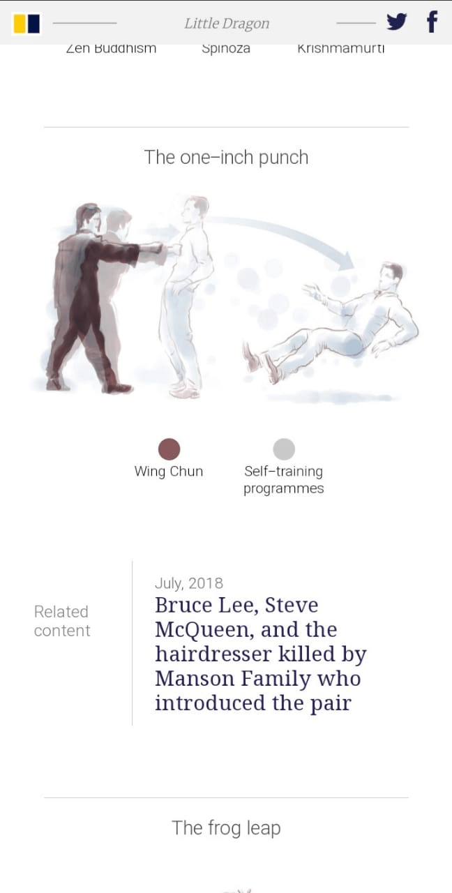
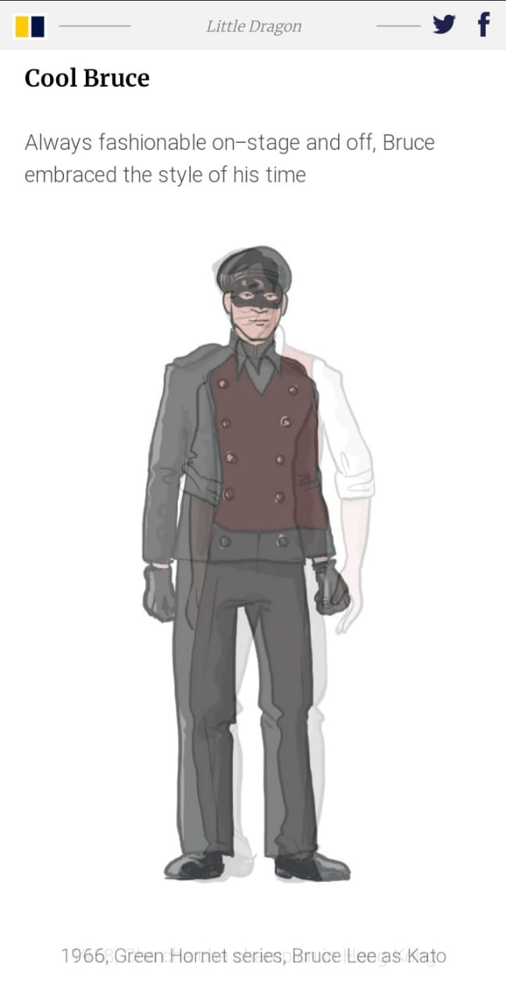
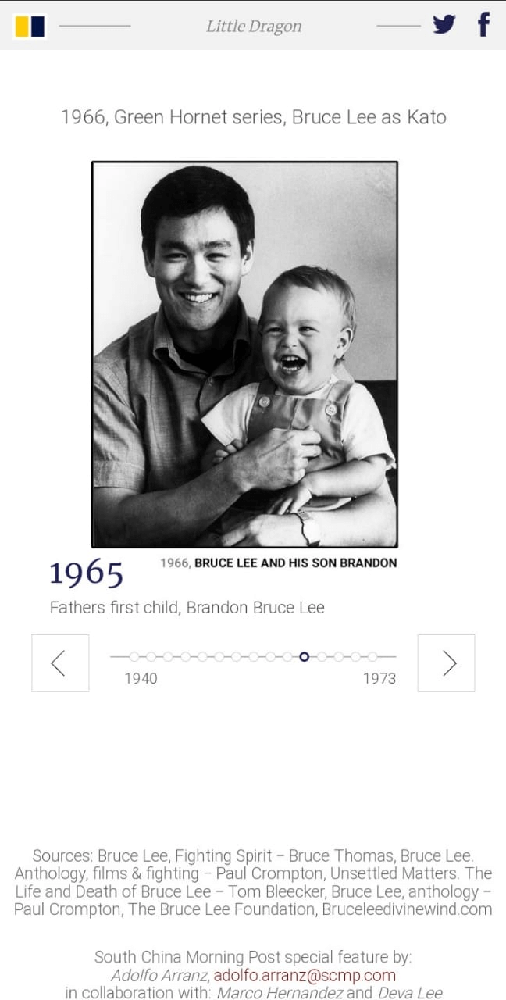

INFOGRAFÍA IMPRESA
En esta infografía, además de título, bajada, fuentes y créditos, se pueden distinguir cuatros grupos de gráficos. En el primero de ellos se señalan acontecimientos importantes de su vida. Más abajo, le siguen sus habilidades físicas, y en el centro de la página se indica su filosofía y principales combinaciones e influencias que usaba su estilo de lucha. Finalmente una serie de ilustraciones que muestran su estilo tanto fuera como dentro del escenario.
El primer grupo de gráficos consta de dos no figurativos. El primero, una línea temporal donde se puede apreciar las diferentes fechas importantes de la vida de Bruce Lee, y un segundo más pequeño que muestra las ganancias monetarias de sus últimas películas realizadas.
El segundo grupo de gráficos son una serie de figurativos que muestran las increíbles habilidades del actor, entregando consigo datos numéricos que lo demuestran.
El tercer grupo en realidad es un único gráfico mixto, que muestra el “Jeet kune do”, una arte marcial fundada por Bruce Lee. Es un híbrido de diferentes artes marciales y filosofías que son mencionadas y ejemplificadas en el gráfico a través de diferentes poses y ataques característicos.
El último grupo de gráficas figurativas consta de los diferentes estilos de moda que Lee ocupó tanto dentro como fuera del cine, mostrando su adaptabilidad para acoger y ser diferentes personajes como actor.
INFOGRAFÍA DIGITAL
La versión digital comienza de forma distinta su narrativa. Partiendo porque su nombre cambia a “Remembering Bruce Lee, the Kung Fu legend and godfather of MMA” y contiene una ilustración nueva que impone un aire de grandeza sobre el actor. Cabe mencionar que aquí si se mencionan a los autores de la infografía, a diferencia de su ausencia en la versión en papel.

Esta versión se salta la parte de gráficos no figurativos y va directo a las habilidades de Lee. Se da la libertad de general divisiones entre el tipo de habilidades para poder explicar a mayor profundidad el contexto de ellas.

El gráfico mixto en la versión digital se separa y empieza con una introducción más profunda al respecto del arte marcial fundado por Bruce Lee. Al mismo tiempo la ilustración presentada aquí, que en la versión impresa tomaba un carácter protagónico, pasa a ser una de tantas y no presenta mayor importancia.

Siguiendo en el gráfico mixto. Ahora cada ejemplificación de las distintas artes marciales y filosofías se presentaba por sí sola. En este ejemplo en particular la versión a papel mostraba dos ilustraciones que relataban un antes y un después de un ataque, pero en la pantalla paso a ser un gif que daba mejor esta sensación de movimiento. Aparte, dado a la posibilidad del uso del internet, se integran “related content” entre medio de estas ilustraciones.

El gráfico figurativo de la moda de Bruce Lee pasó de ser una línea con todas las ilustraciones, a un gif que rotaba en cada estilo infinitamente. Además lograba mencionar fecha y origen de ese atuendo en específico, cosa que no era posible en la versión impresa por temas de espacio.

Por último, el primer gráfico que se presentaba en la versión a papel pasó a ser el último de la digital. Se ignoraron los datos de ganancias de sus películas, pero se logró mostrar cada fecha importante en la vida de Lee junto a alguna imagen relativa a ese evento. Requería interacción para pasar de un suceso a otro a través de clicks en las flechas de cada costado de la línea.

La adaptación de la infografía impresa a lo digital responde a la forma en que esta será vista mediante dispositivos móviles o en formatos verticales, ya que es el medio más común para acceder a la información hoy en día (aunque también funciona si es visto desde pantallas apaisadas). Dado el sustrato, el principio a seguir es darle un orden al contenido para que el lector pueda acceder a él de manera eficiente y amable, donde el texto e imágenes sean legibles a primera vista, sin requerir mayor interacción ni causar agobio visual por la cantidad de información. Además, la versión digital permite mayor detalle en tanto se integran elementos multimedia.